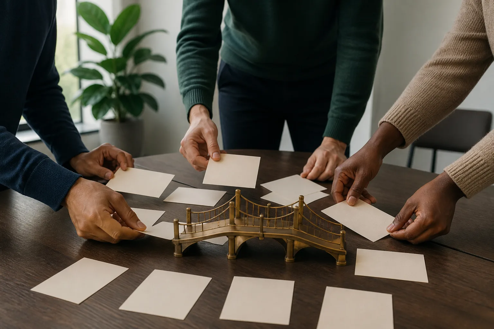
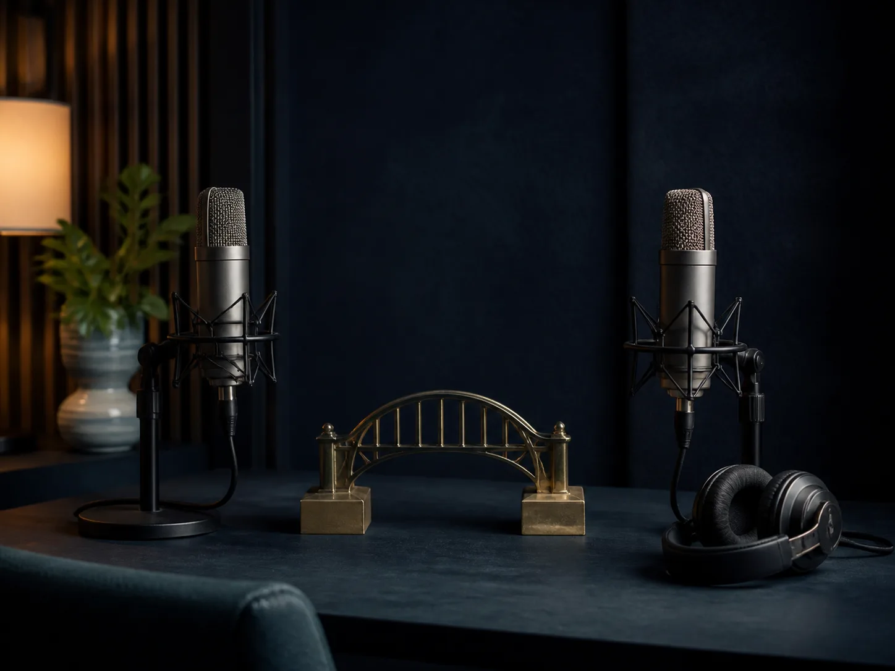

Führung & Veränderung
Menschen stärken, Verantwortung ermöglichen und Wandel gestalten, ohne Menschen zu verlieren.
Ich verbinde Menschen, Perspektiven und Möglichkeiten und mache aus komplexen Situationen tragfähige nächste Schritte.
Meine Arbeit beginnt dort, wo einfache Antworten nicht mehr reichen: in Veränderung, Krise, Rollenwechsel, Verantwortung oder Teamdynamik.
Ich verbinde Wirtschaft und Menschlichkeit, Herz und Verstand, Gesundheit und Leistung, Erfahrung und Innovation, Wissenschaft und Praxis.
Sechs Schritte geben Veränderung eine klare Richtung.

Orientierung, Entwicklung und Umsetzung für Menschen und Organisationen in Bewegung.
Menschen stärken, Verantwortung ermöglichen und Wandel gestalten, ohne Menschen zu verlieren.
Komplexität sortieren, Ressourcen aktivieren und tragfähige Lösungen gemeinsam entwickeln.
Aus einer guten Idee ein klares Konzept, passende Verbindungen und reale Wirkung machen.
Orientierung in Übergängen schaffen und neue Handlungsfähigkeit Schritt für Schritt aufbauen.
Vorträge, die nachdenklich machen, Mut geben und neue Perspektiven öffnen.
Wissenschaftlich fundierte Aufklärung, Vernetzung und gesellschaftliche Veränderung unterstützen.
Das Buch verbindet Metaphern, Geschichten und Perspektivwechsel. Die Edition ergänzt es um Brückenkarten, Workbook und 24 Audio-Impulse.
Zwei Schwesterwelten mit gemeinsamer Haltung und unterschiedlichen Zielen.
Der Podcast bringt Erfahrungen, Zweifel und Ideen aus Wirtschaft, Wissenschaft, Medizin, Politik, Gesellschaft, Sport und Kultur zusammen.
SpotifyApple PodcastsYouTubeLinkedIn

„Menschen und ihre Erfahrungen öffnen neue Perspektiven.“
Persönliche Begleitung, Umsetzung und Qualifizierung greifen ineinander.
Als Gründungsmitglied und im Vorstand der LipödemGesellschaft e.V. verbindet Claudia wissenschaftlich fundierte Informationen, Betroffene, Fachleute und Politik.
Die Kampagne „LipöWAS?“ zeigt, wie Aufklärung, Vernetzung und Beteiligung gesellschaftliche Veränderung anstoßen können.
Die Inhalte dienen der Aufklärung und Vernetzung. Sie ersetzen keine medizinische Beratung, Diagnose oder Therapie.
„Du darfst alles sagen, wenn die Form stimmt.“
„Du darfst alles tun, wenn Du die Konsequenzen trägst.“
„Wir finden gemeinsam immer eine Lösung.“
„Ehrlich währt am längsten.“
„Immer bissche mitdenke.“
Für Vorträge, Coaching, Organisationsentwicklung, Buch & Edition oder eine erste gemeinsame Klärung.